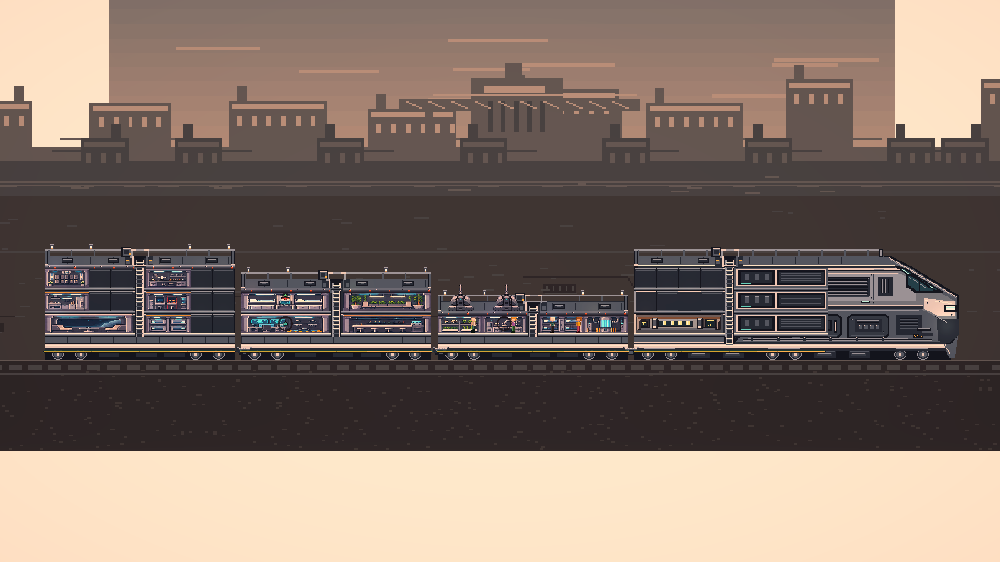
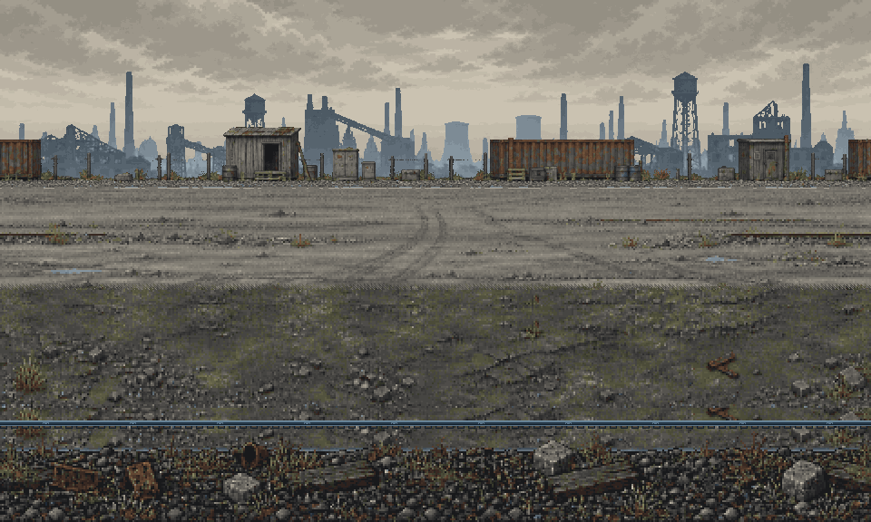
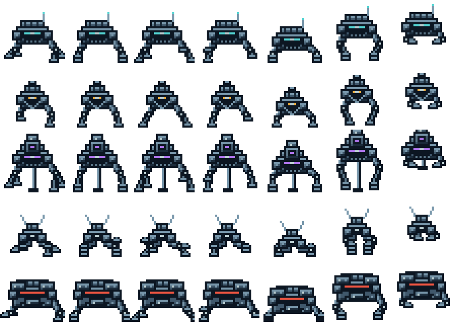

이 문서의 목차
- 방주 열차 (Ark Train) 통합 기획서
- 0. 문서의 역할과 적용 상태
- 1. 게임의 정의
- 2. 운행과 핵심 순환 — 유지
- 3. 대원과 기본 지휘
- 4. 성향: 배치마다 다른 장단점
- 5. 스트레스와 붕괴 예방
- 6. 대원에게 남는 사건 — 신규 D06 · 🔎 코덱스 검토 필요 (2026-09-09 구현, Play 실측)
- 7. 열차와 설비 — 유지
- 8. 자원·전력·성장 — 유지
- 9. 탐색 목적 선택 — 신규 D07 · 🔎 코덱스 검토 필요 (2026-09-08 구현, 저장은 미구현)
- 10. 방어와 회복 구간
- 11. 생활 목표와 진행 — 신규 D09 · 🔎 코덱스 검토 필요 (2026-09-09 구현, Play 실측)
- 12. UI와 정보 구조
- 13. 수치와 플레이 검증 원칙
- 14. 현재 규칙의 참조 위치
- 15. 구현 이관 순서
- 16. 폐기 규칙과 구문서 대응
방주 열차 (Ark Train) 통합 기획서 ¶



개정일: 2026-09-21 / 문서 버전: 2.2
0. 문서의 역할과 적용 상태 ¶
이 문서는 방주 열차의 목표 게임 경험과 게임 규칙을 정의한다. 기준 장르는 대원 중심의 소규모 생존 경영 시뮬레이션이다. 림월드에서 지향하는 부분은 대원을 돌보며 사건과 선택이 기억으로 남는 경험이다. 시스템 규모는 소수 대원과 열차 내부에 집중한다.
이번 개정은 기획 문서의 변경이다. 코드·씬·프리팹·저장 형식에 반영됐다는 뜻이 아니다.
| 표시 | 의미 |
|---|---|
| 유지 | 현재 코드에서 확인한 구조를 목표 기획에도 유지한다. 실행 검증 완료를 뜻하지 않는다 |
| 개정 | 기존 규칙을 이 문서의 규칙으로 바꿀 계획이다. 구현 전까지 실제 게임은 기존대로 동작한다 |
| 신규 | 이번에 추가한 기획이다. 별도 구현이 필요하다 |
| 초안 수치 | 최초 구현과 플레이 검증을 위한 시작값이다. 확정 밸런스 수치가 아니다 |
| 코덱스 검토 필요 | 코드에 반영했고 컴파일·기본 동작까지 확인했다. 아직 사람이 읽고 승인하지 않았다 — 규칙 해석·수치·저장 호환을 검토한 뒤에 이 표시를 지운다 |
각 절에서 표시가 생략된 설명은 해당 절의 상태를 따른다. 현재 코드와 다른 목표 규칙은 15장의 이관표에 모은다. 목표 기획의 충돌은 이 문서를 우선하고, 현재 게임 동작을 설명할 때는 실제 코드와 씬 값을 확인한다.
기존 본문과 수정 이력은 전면 개정 이전 기획서에 원문 그대로 보존했다. 과거 장 번호를 인용하는 코드 주석은 그 보존본을 가리킨다. 새로운 작업은 이 문서의 절 제목 또는 변경 ID를 인용한다.
관련 문서:
- 플레이 흐름 가이드: 본 기획에 따른 초중반 경험과 검증 장면.
- 기획 개정 이관표: 코드 변경 지점과 완료 기준.
- 기존 HANDOVER 및 작업·검증 보고서는 당시 기록이다. 현재 기획을 덮어쓰지 않는다.
- 좌표·렌더링 계층은 기존 개발 문서와 씬을 참조한다. 2026-09-20 실내 슬롯 개정은 7.1을 우선한다.
1. 게임의 정의 ¶
1.1 한 문장 소개 ¶
기계 생물이 지배한 황무지에서, 성격이 다른 생존자들을 돌보고 열차를 증축하며 최대한 멀리 살아남는 2D 생존 경영 게임.
1.1-b 스토어 포지셔닝 한 문장 — 신규 (2026-09-10, 시장조사 6.7) ¶
"Snowpiercer × RimWorld — 열차 한 량의 단면에서 벌이는, 혼자 하는 생존 경영."
- 왜 이 문장인가: 2026년에 열차 생존물이 최소 6종 출시되는데 전부 3D 코옵이다(시장조사 5절). 스토어 첫 문장이 "열차 생존 크래프팅"이면 우리는 그 여섯과 같은 바구니에 담기고, 그 바구니 안에서 우리는 가장 작은 게임이 된다. 그래서 비교 대상을 우리가 먼저 지정한다.
- 긍정률 상위군의 공통점은 한 문장 훅이었다 — The Wandering Village("거대 생물 등 위의 마을"), Infection Free Zone("내 동네에서"), Dome Keeper("파고, 막고").
- 이 문장이 약속하는 셋: 단면(2D 사이드뷰) · 사람을 돌보는 경영 · 싱글 전용. 🛑 싱글 전용은 결함이 아니라 방어선이다(시장조사 7.3). 코옵을 넣는 순간 일시정지 기반 경영이 무너지고 3D 코옵 6종과 정면으로 붙게 된다.
1.2 핵심 경험 ¶
플레이어는 열차의 지휘관이다. 대원이 직접 걷고 일하고 쉬며, 플레이어는 누구를 어디에 배치하고 언제 위험을 감수할지 결정한다. 방어는 이 공동체의 일상과 인력 배분을 시험하는 역할을 한다.
성공의 감각은 다음 세 가지다.
- 처음에는 간신히 먹고 자던 사람들이 각자 맞는 자리를 찾는다.
- 위기를 지나고 나면 누가 무엇을 했는지 기억에 남는다.
- 열차가 커질수록 내가 만든 생활 공간과 운영 방식이 눈에 보인다.
1.3 세계관과 화면 — 유지 ¶
- 포스트 아포칼립스, 근미래 SF. 동력코어, 합성 소재, 발광 패널, 홀로그램 계기를 사용한다.
- 무궤도 방주 열차가 황무지를 이동한다. 선로 건설과 철도 노선 운영은 없다.
- 2D 픽셀 사이드뷰. 객실 단면에서 대원과 설비를 보고 지붕에서 포탑을 운용한다.
- 적은 배경 상단에서 등장해 거리 구간을 오가며 사격하거나 접근한다.
- 픽셀 월드와 홀로그램 UI의 표현 차이는 유지한다.
1.4 복잡도 제한 ¶
이번 범위에서 대규모 관계망, 연애·가계도, 신체 부위별 장비·의료, 감염·질병군, 배관·기체·온도 시뮬레이션, 외부 탐험 맵, 다수 진영 외교를 추가하지 않는다. 기존 단일 골절 상태는 유지하되 부위별 부상으로 확장하지 않는다.
새 장치를 추가할 때는 기존 행동·자원·UI를 먼저 사용한다. 사건 이력은 기록으로, 생활 목표는 진행 안내로 다룬다. 별도 성장 화폐나 영구 능력 보상을 만들지 않는다.
2. 운행과 핵심 순환 — 유지 ¶
2.1 시작·생존·종료 ¶
- 출발 준비 중에는 시뮬레이션이 멈춘다. 대원과 설비를 확인한 뒤 첫 출발로 시간을 진행한다.
- 시작 인원은 4명이다. 정확한 시작 객차·설비·자원 수량은 씬 기준값을 별도 실측한다. 구문서의 서로 다른 시작 배치를 복원하지 않는다.
- 열차 동력코어 상실 또는 대원 전멸로 운행이 끝난다.
- 고정 엔딩 없이 거리와 생존 일수를 기록한다. 패배한 운행의 세이브는 다시 이어갈 수 없고 최고 기록은 남긴다.
- 대원의 사망·실종은 해당 운행에서 영구 상실이다.
2.2 반복 흐름 ¶
주행과 생활 관리 → 정차 지점 선택 → 탐색대 파견 → 복귀를 기다리며 방어·정비 → 자원과 생존자 처리 → 설비·연구·객차 개선 → 재출발.
주행은 연료 회수와 정차 압박 해소의 시간이다. 정차는 탐색과 정비에 쓰는 시간이며 연료를 소비한다. 이동 거리가 늘면 적의 위협도 커진다. 어느 한 상태로 고정해서 모든 문제를 해결하지 못하게 한다.
2.3 플레이어의 주요 선택 ¶
| 상황 | 선택 | 대가 |
|---|---|---|
| 탐색에 인원을 보낸다 | 필요한 자원이나 생존자를 확보 | 열차 생산·연구·방어에 남을 인원 감소 |
| 발전기를 추가 가동한다 | 설비·포탑 가동 여유 확보 | 연료 수지 악화 |
| 대원을 쉬게 한다 | 피로·스트레스 회복 | 그 시간의 생산·방어 포기 |
| 객차를 늘린다 | 생활 공간과 설비 자리 확보 | 자원 지출과 방어 범위 증가 |
| 탐색대 복귀를 더 기다린다 | 대원과 수확을 보존 | 정차 압박과 열차 피해 감수 |
3. 대원과 기본 지휘 ¶
3.1 기본 상태 — 유지 ¶
대원은 이름, 외형, MBTI 성향, 탐색 능력과 배고픔·에너지·체력·스트레스를 가진다. 먹기·수면·휴식·작업·포탑 운용·탐색을 수행한다. 수치는 실제 행동과 연결하며 별도의 일일 시간표 편집기는 추가하지 않는다.
탐색에서 생존자를 발견하면 결과창에서 수용 또는 방출한다. 수용은 인력 증가와 식량·잠자리·휴식 수요 증가를 함께 뜻한다. 현재 코드의 합류 상한 기본값은 16명이다. 이는 목표 인구가 아니며 씬 직렬화값은 구현 착수 시 확인한다.
3.2 침대·작업장 지정 — 개정 D01 · 코덱스 검수 통과 (2026-09-09, Docs/Work/D01/codex-review.md) ¶
기본 침대 지정과 작업장 지정은 처음부터 사용할 수 있다. 현재의 중후반 연구 잠금을 제거한다. 드래그는 순간이동이 아니라 목적지 지시이며 실제 이동 시간이 든다.
지정은 생활의 기본 배정이다. 배고픔, 수면, 부상, 휴식 필요를 무시하고 계속 일하라는 명령이 아니다. 휴식이 끝나면 지정 작업장으로 복귀한다. 같은 슬롯의 수용 인원을 넘는 지정은 불가능하며 변경 전에 기존 소유자를 알려준다.
- 우선순위: 사망·실종 > 붕괴 > 붕괴 전 경고 휴식 > 생존에 필요한 행동 > 일반 지시·자동 전투 배치 > 지정 작업 > 빈 일자리 탐색.
- 구체적인 자율 행동 충돌은 CrewAI에서 기존 규칙을 보존하며 위 순서에 맞춰 정리한다.
- 포탑 자동 배치가 기본 생산 작업장 지정을 지우지 않는다. 전투가 끝나면 생활 작업으로 돌아간다.
- 포탑 영구 지정 기능은 이번에 추가하지 않는다. 기존 수동 지시와 자동 전투 배치를 사용한다.
기존 '지정 침대' 연구는 고급 침실·캡슐 침대 해금으로 바꾼다. '지정 작업장' 연구의 조작 권한 보상은 제거하고 새 대체 연구는 만들지 않는다. 후속 연구의 선행 조건과 구 세이브 연구 ID는 호환 이관한다.
4. 성향: 배치마다 다른 장단점 ¶
4.1 MBTI를 사용하는 방식 — 유지 ¶
MBTI는 게임 내 성향 규칙이다. 플레이어가 16종의 계산표를 외우지 않아도 대원 정보창에서 적합한 일과 쉬는 방법을 알 수 있어야 한다. 성향 이름보다 현재 행동과 불편한 이유를 먼저 보여준다.
| 축 | 유지할 역할 | 배치 고민 |
|---|---|---|
| E / I | 함께 있을 때와 혼자 있을 때의 스트레스 차이 | 공동 공간과 조용한 공간을 누구에게 줄 것인가 |
| S / N | 기초 생산과 연구의 적합성 차이 | 적임자가 탐색·전투로 빠졌을 때 누가 대신할 것인가 |
| T / F | 정서적 독립성과 동료 안정 역할 | 어떤 구성으로 공동 작업장을 유지할 것인가 |
| J / P | 가까운 고정 동선과 유연한 동선의 차이 | 짧은 동선의 자리를 누구에게 먼저 줄 것인가 |
| A / T | 스트레스 변화 속도와 압박 중 생산 차이 | 생산을 더 유지할지 일찍 쉬게 할지 |
4.2 사고형·감정형 균형 — 개정 D02 · 코덱스 검수 통과 (2026-09-09, Docs/Work/D02-D04/codex-review.md) ¶
사고형은 주변의 높은 스트레스에 쉽게 휩쓸리지 않는 독립성을 유지한다. 감정형은 주변이 불안할 때 영향을 받는 대신 자신이 안정돼 있으면 동료를 안정시키는 역할을 가진다.
- 기존 T형의 F형 스트레스 상승 40초 차단을 제거한다. 독립성과 타인 보호를 한쪽에 겹쳐 두지 않는다.
- F형의 스트레스가 40 미만이고 붕괴·탐색 중이 아닐 때, 같은 객차에 있는 다른 평상시 대원의 스트레스를 초당 0.04 낮춘다. 모두 초안 수치다.
- 여러 F형이 있어도 효과는 한 번만 적용한다. 자신에게 적용하지 않는다.
- 경고 휴식 중인 대원은 받을 수 있지만 붕괴 중인 대원에게는 적용하지 않는다. 붕괴 치료 수단이 아니다.
- 휴게실의 해소량보다 충분히 작게 둔다. F형 한 명으로 휴게실을 대체할 수 없어야 한다.
- 원인 표시에는 '동료의 안정'으로 나타내고 같은 원인을 중복 나열하지 않는다.
4.2-B 성향이 플레이어의 입력이 되는 자리 — 신규 (2026-09-23) ¶
지금까지 MBTI 는 전부 관찰 대상이었다. 규칙은 다 구현돼 있는데 플레이어가 성향을 보고 지금 무엇을 누르는가는 탐색 편성 하나뿐이었고, 나머지는 자동으로 굴러간 뒤 말풍선·카드로 통보됐다. 그래서 "MBTI 가 있긴 한데 뭘 해야 할지 모르겠다"가 됐다. 아래 넷이 그 빈자리를 메운다. 🛑 새 축을 만들지 않는다 — 넷 다 이미 도메인을 가진 축의 연장이다.
① 사람을 고르는 사건 카드 8종 — 신설 6(정비 당번 S/N · 포문 당번 T/F · 신입 교육 S/N · 화해 자리 관계 · 교섭 E/I · 당직 순번 J/P) + 개조 2(밀항자 T/F · 밤샘 자원 관계) 선택지 1·2 가 사람 이름으로 나오고, 결과는 그 사람의 성향이 정한다. 후보는 늘 그 축에서 서로 반대편인 두 사람이며, 각 편에서 가장 덜 지친 사람이 뽑힌다. 양쪽을 대표할 사람이 없으면 카드가 발동하지 않는다(밀항자만 예외 — 옛 선택지로 되돌아간다).
🛑 네 축이 전부 한 번씩 기준이 된다. 한 축만 쓰면 나머지 셋은 여전히 관찰 대상으로 남는다. 🛑 당직 순번은 고르는 사람과 받는 사람 양쪽에 같은 축이 작용한다 — J형에게 맡기면 전원이 편해지지만 P형이 갑갑해하고, P형에게 맡기면 그 반대다. 그래서 답이 열차의 J/P 구성에 따라 바뀐다. 정답이 고정되지 않는 유일한 형태다.
전문은 기획_사건카드_위키.md 5절.
② 관계 — 친분과 앙금 (CrewBonds)
조화가 지금까지 파견 순간의 성향 비율 스냅샷이었던 탓에, 어제 주먹이 오갈 뻔한 둘을 같이 보내도 아무 일이 없었다. 관계는 "그 사람들이 겪은 일"이고 성향은 "원래 어떤가"라 서로 다른 축이므로 조화에 더해진다(대체가 아니다).
- 값은 −100(앙금) ~ +100(친분). 문턱은 ±40.
- 마주침 거리(3u) 안에 함께 있으면 4축 궁합만큼 천천히 흐른다. 4축 중 2개 일치 = 아무 일도 없음. 정반대가 하루 종일 붙어 있으면 앙금 문턱에 닿는다.
- 효과는 둘뿐이다: 마주침 거리 안의 가장 친한 한 명이 스트레스를 초당 0.05 낮추고, 가장 껄끄러운 한 명이 초당 0.06 올린다. 🛑 머릿수로 세지 않는다 — 세면 "친한 사람 몰아넣기"가 정답이 되어 I형 마주침 규칙과 싸우는 재미가 사라진다.
- 🛑 휴게실 해소(부스 0.50/s)보다 충분히 작다. 동료 하나가 휴게실을 대신하면 "누구를 어디서 쉬게 할 것인가"가 통째로 사라진다.
- 🛑 붕괴 중에는 친분 해소를 받지 않는다(동료의 안정과 같은 규약).
- 🛑 히든 축(A/T)은 궁합에 넣지 않는다 — 플레이어가 알 수 없는 값이 관계를 움직이면 "왜 사이가 나빠졌는지"를 영영 못 읽는다.
- 🛑 대원이 스스로 자리를 피해 다니지 않는다. 푸는 길은 배치이고, 그건 플레이어의 결정이다.
- 화면에는 대원 정보창의 한 줄(가장 센 관계 하나, 숫자 없이 이름만)과 말풍선으로만 나온다. 66쌍짜리 표는 결정이 아니라 숙제다.
③ 교전 긴장 — T/F (T/F 감정 도메인의 연장) 포탑에 붙어 실제로 싸우는 동안만 사수의 스트레스가 초당 0.10 오른다. T형 ×0.6 · F형 ×1.4. 🛑 사격 성능은 건드리지 않는다 — 성능을 가르면 "T형만 포탑"으로 굳어 누굴 올릴지가 결정이 아니게 된다. 갈라지는 것은 대가뿐이다.
④ 수리 적성 — S/N (S/N 생산 도메인의 연장) 수리는 손으로 만지는 반복 작업이라 재배·조리·제작과 성격이 같다. S형 ×1.25, N형은 같은 것을 오래 만지면 생산과 같은 루틴 피로를 받는다. 🛑 새 피로 타이머를 만들지 않는다 — 만들면 "재배기에서 지친 N형을 수리로 돌린다"가 회피 수단이 된다.
⑤ 합류 전 미리보기 — 탐색 결과창의 생존자 툴팁이 "맞는 휴게실이 열차에 있는가", 대원 칩이 "지금 열차의 I/S/T/J 구성"을 말한다. 인접 효과의 '이 자리' 줄과 같은 원칙이다: 값을 치르기 전에 결과를 보여 준다. 안 그러면 '수용'은 언제나 누르는 버튼이고 방출은 존재하지 않는 선택지가 된다.
4.3 탐색 조화 — 개정 D03 · 🔎 코덱스 검토 필요 (구현 확인됨, 지연 상한 포함) ¶
E/I 또는 J/P가 섞였다는 이유만으로 조화가 최하점으로 떨어지는 규칙을 폐기한다. 능력 보완과 팀 안정 사이의 선택은 남긴다.
🆕 2026-09-23 — 여기에 팀 안 모든 쌍의 관계 평균(±100 → ±20점)이 더해진다. 4.2-B ② 참조.
초안 계산은 조화 50에서 출발하고, 에너지·스트레스 상태와 안정된 동료로 가감한다. 에너지 30 미만인 대원 1명당 -10, 스트레스 70 이상인 대원 1명당 -10, 스트레스 40 미만의 F형이 있으면 +5를 한 번 더한다. 보급품 보정 후 0~100으로 제한한다. 성향의 직접적인 상극 감점은 없다.
조화가 낮을 때의 지연은 파견당 최대 1회, 10초를 초안으로 둔다. 지연 원인과 새 예상 복귀 범위를 무전으로 알린다. 낮은 조화가 반복 지연으로 무한 대기를 만들지 않는다. 판단력에 따른 예상 시간 오차와 실제 조화 지연은 별도 항목으로 표시한다.
4.4 히든 기질 — 유지·표시 개정 ¶
A는 변화가 완만하고 T는 변화가 빠르며 압박 중 산출 이점이 있다. 심리 프로파일 연구 전에는 기질 이름을 가릴 수 있지만 현재 스트레스 원인과 위험 경고는 가리지 않는다. 정밀 확률과 성향 설명을 보기 위해 연구하는 것이며, 기본적인 위기 판단을 연구로 잠그지 않는다.
5. 스트레스와 붕괴 예방 ¶
5.1 원인을 읽을 수 있는 상태창 — 신규 D04 · 코덱스 검수 통과 (2026-09-09, Docs/Work/D02-D04/codex-review.md) ¶
대원 정보창은 스트레스 게이지 아래에 현재 증감 방향과 영향이 큰 원인 최대 3개를 표시한다.
예: '상승 중 / 과밀로 불편함 / 반복 작업에 지침 / 동료의 안정'.
- 실제 적용된 원인을 집계한다. 고정 문구로 원인을 추측해서 표시하지 않는다.
- 상승·해소를 함께 반영한 순변화와 원인별 기여를 구분한다. 기질 배율·잠금 때문에 실제 0이면 상승한다고 표기하지 않는다.
- 지속 원인과 일회성 충격은 구분한다. '동료 사망 충격'이 계속 초당 적용되는 것처럼 보이지 않게 한다.
- 효과가 끝난 원인은 제거하고, 상세 설명에 가능한 행동을 한 줄 붙인다.
- 드래그 후 과밀이 해소되거나 휴게실에 도착했을 때 원인과 방향이 실제로 바뀌어야 한다.
- HUD에서는 위험 대원을 선택해 해당 정보와 위치로 바로 이동한다. 일시적 사건 카드만으로 예방 정보를 전달하지 않는다.
5.2 붕괴 전 경고 휴식 — 신규 D05 · 🔎 코덱스 검토 필요 (2026-09-09 구현, Play 실측) ¶
스트레스 80 이상이 10초 지속되면 경고 휴식에 들어간다. 두 값은 초안이다. 이 경고는 자원 생산 실패나 피해를 추가하는 사건이 아니라, 위험을 읽고 배치를 고칠 기회다.
- 대원이 현재 작업을 멈추고 사용 가능한 적합 휴게실을 찾는다.
- 경보에 이름, 원인, '휴게실 부족' 또는 이동 목적지를 표시한다.
- 휴게실이 없으면 현재 위치에서 작업을 멈춘다. 작업 원인만 중단되고 과밀·고독 등 환경 원인은 남는다. 자동 해소 보너스를 주지 않는다.
- 스트레스 60 이하에서 경고를 해제하고 생존 상태를 확인한 뒤 원래 배정으로 돌아간다.
- 같은 고스트레스 구간에서 경고를 반복 발행하지 않는다. 60 이하로 회복해야 다시 발행할 수 있다.
경고 휴식 중에는 일반 작업·포탑 자동 배치로 강제 복귀하지 않는다. 다른 휴게실·침대·안전 위치로 이동시키거나 진정제를 사용할 수 있다. '위험을 무시하고 강제 노동' 같은 별도 조작은 이번 범위에 추가하지 않는다.
급격한 충격으로 100에 도달하면 최소 10초의 위기 경고 시간을 준 뒤, 여전히 100이면 붕괴한다. 스트레스는 100에서 제한하며 경고를 받았다는 이유로 초기화하지 않는다. 평상시부터의 10초 고스트레스 경고를 이미 겪은 경우 추가 유예를 반복 제공하지 않는다. 저장·불러오기로 유예가 다시 생기지 않는다.
5.3 실제 붕괴 — 유지·흐름 개정 ¶
무기력은 본인의 노동 중단, 방황은 주변 운영 방해를 일으킨다. 실제 붕괴 이후 자연 진정과 기존 사망 위험 구조는 유지한다. 붕괴 직후와 주기별 사망 확률은 구현에 있는 A/T 차이를 기준으로 별도 플레이 검증한다. D05가 제공하는 대처 기회는 붕괴 전에 위치한다.
붕괴를 완치하는 전용 시설은 만들지 않는다. 평상시 휴게 시설과 진정제는 예방용이다. 의무실의 체력·골절 치료, KIA 응급 구조를 정신 붕괴 치료와 혼동하지 않는다.
진정제의 예방 전용화도 D05의 변경에 포함한다. 현재 Consumables는 붕괴 대원을 별도로 제외하지 않으므로, 구현 시 실제 붕괴 중인 대원을 대상에서 제외한다. 경고 휴식 중인 대원은 대상으로 유지하고 유효한 대상이 없으면 소비하지 않는다. 휴게 효과도 실제 붕괴 중에는 적용하지 않아 자연 진정 시간을 우회하지 않는다.
붕괴 중 가능한 행동은 남은 대원 재배치와 위험 공간에서의 대피다. 해당 대원의 사망을 확실히 막을 수 있다는 메시지를 내보내지 않는다. '서두르면 살릴 수 있다', '방치했다' 같은 단정은 실제 선택 가능 여부에 맞춰 수정한다.
5.4 휴게 설비 — 효과 유지 · 점유 칸 수 D10 환산 ¶
휴게 설비는 초반 부스 3종(2칸)과 후반 홀 3종(4칸)으로 나뉜다(2026-09-16 구성 확정, 2026-09-20 새 칸 단위로 환산). 맞는 성향의 회복 효율이 높으며 같은 설비를 여러 대원이 이용한다. 인원과 과밀 조건도 함께 고려한다.
기존 휴게실의 저전력 회복 하한을 유지한다. 전력 초과 시 생산·방어가 약해지는 상황에 스트레스 해소까지 같은 비율로 붕괴시키지 않는다. 휴식은 생산 인력과 공간을 사용하므로 무료 상시 버프가 아니다.
| 무리 | 설비 | 맞는 성향 | 크기·정원 | 1인 해소(T1, 맞으면 ×2) | 칸당 | 해금 | 설치비(T1) · 전력 |
|---|---|---|---|---|---|---|---|
| 부스 | 전술 시뮬레이터 | T·J | 2칸 · 2명 | 0.50/s | 0.50 | 승무원 후생 (120 RP) | 고철 10 · 1kW |
| 부스 | 홀로 오락 부스 | E·N | 2칸 · 2명 | 0.50/s | 0.50 | 승무원 후생 | 고철 10 · 1kW |
| 부스 | 모형 조립 부스 | I·S | 2칸 · 2명 | 0.50/s | 0.50 | 승무원 후생 | 고철 10 · 1kW |
| 홀 | 네온 바 | E·F | 4칸 · 4명 | 0.75/s | 0.75 | 공용 휴게 홀 (400 RP · 부품 8, 조리대 뒤) | 고철 30 · 2kW |
| 홀 | 온실 라운지 | S·P | 4칸 · 4명 | 0.75/s | 0.75 | 공용 휴게 홀 | 고철 30 · 2kW |
| 홀 | 관측 라운지 | I·N | 4칸 · 4명 | 0.75/s | 0.75 | 공용 휴게 홀 | 고철 30 · 2kW |
- 부스와 홀은 MBTI 짝이 겹치지 않는다. 그리고 각 무리만으로도 16유형 전원이 한 곳 이상에 맞는다 — 초반에 부스만 있어도 맞는 휴게실이 없는 대원은 나오지 않는다.
- 홀은 칸당으로도 1인당으로도 부스보다 좋다(1.5배). 대가는 연구 한 단계 · 사다리 한쪽의 나란한 빈 칸 넷 · 설치비 3배 · 전력 2배 · I형 압박(정원 4 ≥ 다인 설비 문턱 3). 부스 정원 2는 문턱 아래다.
- 관측 라운지만 칸막이 개인석이라 I형 압박이 없다(캡슐 수면실과 같은 규칙).
- 티어(T1~T5)는 여섯 모두 해소 배수만 올린다(1.00 → 2.00). 크기·정원은 티어로 바뀌지 않는다.
- 모형 조립 부스의 모형·온실의 식물은 자원이 되지 않는다. 결과물이 쓸모 있으면 휴식이 아니라 노동이다.
- 수치 단일 소스 =
FurnitureTiers휴게실 절.
6. 대원에게 남는 사건 — 신규 D06 · 🔎 코덱스 검토 필요 (2026-09-09 구현, Play 실측) ¶
6.1 주요 이력 ¶
대원 정보창에 주요 이력 최대 3개를 표시한다. 첫 합류는 고정하고, 나머지 두 자리에 최근 주요 사건을 유지한다. 별도의 관계 수치나 경험치 보너스는 만들지 않는다.
기록하는 사건은 첫 합류, 탐색대 일원으로 생존자 구조에 참여, 실제 붕괴에서 생존, KIA 응급 구조에서 생존이다. 기존 이벤트를 활용하며 존재하지 않는 공적을 문구로 만들어 주지 않는다.
탐색대 여러 명이 구조했으면 각자 '생존자 구조에 참여'로 기록한다. 무작위 한 명을 영웅으로 선정하지 않는다. 경고 휴식은 주요 이력으로 올리지 않아 일상 경고가 특별 사건을 밀어내지 않게 한다.
6.2 저장과 위령비 ¶
- 사건 종류, 운행 일차, 관련 인물의 표시 이름 스냅샷을 보관한다. 삭제될 객체 참조를 유지하지 않는다.
- 동일 사건의 중복 수신은 사건 ID로 막는다. 보관 개수는 3개이며 별도 무제한 일지를 저장하지 않는다.
- 사망·실종 시 세 이력을 위령비 기록으로 복사하고, 사망 원인과 기존 성향별 유언을 함께 보여준다.
- 위령비 설치 전에도 사망 기록은 수집한다. 위령비는 열람 공간이며 수치 버프를 주지 않는다.
- 구 세이브는 과거 사건을 지어내지 않는다. 합류 시점이 없으면 '기록 이전 합류'로 표시하고 이후 사건부터 기록한다.
7. 열차와 설비 — 유지 ¶
7.1 공간 규칙 ¶
객차는 가로로 늘리고 조건을 만족하면 2층, 최대 3층으로 순차 증축한다. 기관실은 선두 고정이며 기존 고정 구조를 사용하고 수직 증축 대상이 아니다. 내부와 지붕의 설치 구역을 분리하고 사다리를 통한 실제 이동 동선을 유지한다.
객차 강화는 장갑·정비·내구도 세 축 모두 무한 강화한다. 층 증축에는 선행 강화 조건이 없다. 장갑은 Lv.5 이후 피해 감소 증가폭이 줄어드는 방식으로 계속 효과가 증가한다. 현재 TrainGrid의 가로 확장 한도는 기관실을 포함한 12칸이다. 객차별 설치 슬롯은 아래 실내 규격을 따른다.
객차 클릭과 설비 정보창으로 배치·강화 상태를 확인한다. 폐기된 별도 열차 편집 모드를 되살리지 않는다. 증설은 현재 기관실 정보 흐름을 유지한다.
7.1-a 실내 8칸 규격 — 개정 D10 (2026-09-21 사용자 수정, 밸런스 검증 대기) ¶
- 객실 한 층은 좌측 4칸 / 사다리 / 우측 4칸, 총 8칸이다. 중앙 사다리는 설치 칸 수에서 제외한다. 이전 12칸 안을 대체한다.
- 객차 외형 폭 15u, 차량 간격, 카메라 배율, 대원·포탑 크기를 유지한다. 층 높이는 D11을 따른다. 한 칸 폭은 27px = 1.6875u, 중앙 통로 폭은 16px = 1u다. 일반 설비 원화는 54×24px, 대형은 108×24px로 표시한다.
- 일반 설비는 2칸, 대형 설비는 4칸이다. 정원·생산량·설치비·전력은 바뀌지 않는다. 일반 설비 수용량은 층당 4개다.
- 시작 객실의 기존 설비 네 개가 8칸을 사용한다. 기관실은 사다리 왼쪽 층당 4칸이며, 오른쪽 기계 외장은 설치 공간으로 만들지 않는다.
- 설치는 선택한 칸을 왼쪽 끝으로 삼아 오른쪽 연속 칸을 점유한다. 사다리·객차·층 경계를 넘지 않는다. 다른 설비, 대원 점유, 예약 지정, 비활성 칸과 겹치면 비용 지출 전에 실패 이유를 표시한다.
- 다칸 설비의 방 배경·선택 테두리는 한 덩어리로 표시한다. 어느 점유 칸을 눌러도 같은 설비 정보창을 열고, 철거하면 모든 점유 칸을 돌려준다.
- 지붕 슬롯·포탑 배치는 기존 규격을 유지한다. 새로 증설한 객차와 2·3층도 동일한 8칸 규격을 쓴다.
- 저장 v9에서 구 실내 배치를 같은 층의 8칸 안에 재정렬하고 침대·작업장 지정 참조를 함께 이관한다. 수용량을 초과하는 구 저장은 복원 전에 중단하고 원본 파일을 보존한다. 설비를 임의로 버리거나 겹쳐 복원하지 않는다.
- 설치 크기의 단일 소스는
FacilityModels.Footprint이며 휴게실은LoungeSize를 사용한다. 1칸 전용 설비는 아래 제안 단계이며 이번 변경에서 새로 추가하지 않았다.
7.1-b 기존 2층 높이 안의 3층 — 개정 D11 (2026-09-21 구현, 밸런스 검증 대기) ¶
- 객실의 3층 완성 시 지붕 시작은 기존 2층과 동일한 7u, 지붕 구역 포함 상단은 9u다. 열차 전체나 대원·포탑을 축소하지 않는다.
- 객실은 1층 차체 3.5u(하부 차대 포함), 추가 층은 각각 1.75u다. 지붕 시작 높이는 1층 3.5u / 2층 5.25u / 3층 7u다. 바퀴와 하부 차대는 원래 픽셀을 보존한다.
- 각 층의 28px = 1.75u는 구조 바닥 4px = 0.25u + 실내 24px = 1.5u로 나눈다. 설비·방 배경·선택 영역은 바닥 위에서 시작하며 바닥 두께를 덮지 않는다. 보행 바닥선은 1층 2u / 2층 3.75u / 3층 5.5u다. 층당 사다리 제외 8칸, 객차당 최대 24칸이며 일반 2칸 설비는 최대 12개를 수용한다.
- 선행 강화 없이 2층을 열고, 2층 증축 후 3층을 추가한다. 비용은 2층 고철 180·부품 60, 3층 고철 360·부품 120·합금 80·모듈 40이다. 첫 객차 추가는 고철 260·부품 100·합금 60이며 이후 모든 재료에 기존 칸 수별 비용 배율을 적용한다. 객차 정보창에서 다음 층과 8칸 증가를 표시한다.
- 기관칸도 객차와 바닥선이 같은 고정 3층으로 나눈다(2026-09-21 추가 지시). 외형 전체 높이·선두부·지붕 7u는 유지하고, 내부와 기계 외장의 층 구분을 맞춘다. 사다리 왼쪽에 층당 4칸, 총 12칸을 처음부터 개방한다. 오른쪽 기계 외장은 설치 공간으로 만들지 않는다.
- 설비 16종의 새 낮은 원화와 작동 프레임, 낮은 객실 프레임·사다리·바닥 턱·방 배경을 사용한다. 동력코어와 신호 해독기는 기존 그림을 새 높이에 맞춘다. 설비 효과·정원·점유 칸 수는 바꾸지 않는다.
- 저장 v8은 바닥 두께와 기관칸 3층화를 반영한다. 구 저장의 슬롯 순번·설비·배정을 유지하고 대원 Y좌표를 새 바닥선으로 이관한다. 객차 3층은 기존 개방 여부를 보존하며 소급 지급하지 않는다. 기관칸의 고정 3층은 구 저장에도 적용한다.
- 구현·검증 기록: D11 작업 기록.
7.2 설비 역할 ¶
| 분류 | 설비 | 운영상 역할 |
|---|---|---|
| 추진 | 동력코어 | 이동·최소 전력·보호해야 할 패배 조건 |
| 발전 | 발전기 | 연료를 소비하는 무인 발전 |
| 생존 생산 | 수경 재배기, 합성 조리대 | 직접 식량 생산, 중반 식량 증폭 |
| 생활 | 이층 합금 침대, 캡슐 침대 | 수면·개인 공간 |
| 휴게 | 부스(2칸): 전술 시뮬레이터, 홀로 오락 부스, 모형 조립 부스 / 홀(4칸): 네온 바, 온실 라운지, 관측 라운지 | 성향에 맞는 스트레스 예방 — 초반 부스, 후반 홀 |
| 연구·제작 | 중앙 분석 데스크, 제작대 | 인력을 써서 연구·자원 가공·소모품 생산 |
| 의료 | 의무실 | 체력·골절 회복과 조건부 KIA 구조 |
| 탐색 보조 | 신호 해독기, 드론 관제탑 | 적 유형 정보, 인명 위험이 없는 보조 회수 |
| 방어 | 지붕 포탑 | 실제 운용 대원과 전력을 사용하는 방어 |
| 기록 | 위령비 | 사망 대원의 기록 열람 |
드론 관제탑은 현재 코드처럼 운용 대원이 필요하다. 직접 탐색보다 느리고 수확이 낮으며 생존자 구조를 대신하지 않는다. '무인 확정 탐색'이라는 과거 설명은 폐기한다.
새로 설치하지 않는 설비: 추진 압력 제어간, 대형 식량 보관고, 주크박스, 설계도 칠판, 모래 정원. 구 세이브 호환용 열거형·객체의 정리는 별도 이관 작업이며 문서 수정으로 삭제하지 않는다.
7.3 설비 인접 효과 — 신규 (2026-09-22 사용자 지시, 구현 완료 · 밸런스 검증 대기) ¶
같은 칸 수·같은 설비 수로도 더 나은 배치가 있게 만든다. 그전까지 칸 안의 자리는 개수였다 — 몇 칸이 비었는가만 물었고 그것이 어느 자리인가는 어디에도 쓰이지 않았다. 그래서 공간을 늘리는 일이 배치의 전부였고, 후반에는 "칸을 하나 더 붙인다" 말고 할 결정이 남지 않았다.
무엇이 인접인가 — 같은 칸 안에서만 본다. 맞붙은 방(옆)과 바로 위·아래 층(1F→2F→3F→지붕).
사다리 통로를 건너면 옆방이 아니고, 이웃 칸은 인접이 아니다(칸은 통째로 터질 수 있다 —
옆 칸에 기대어 지은 배치가 칸 하나와 함께 사라지면 그건 배치가 아니라 함정이다).
판정의 단일 소스는 Core/Adjacency.cs.
| 축 | 규칙 | 값 |
|---|---|---|
| 소음 페널티 | 발전기·동력코어·지붕 포탑(1.0) / 제작대·정비 공구실(0.7)이 옆이나 바로 위아래면 그 잠자리는 잠이 얕다 | 수면 회복 −15%/소음, 하한 −35% |
| 소음 스트레스 | 그 잠자리에서 자는 I형은 자는 동안 스트레스가 오른다(원인 '옆방 소음') | 0.06/s · 소음 2 에서 상한 |
| 차단 | 개인 침실(캡슐)은 차폐돼 있어 소음을 절반만 받는다 | ×0.5 |
| 동선 보너스 | 조리대가 수경 재배기와 맞붙으면 원재료를 나르지 않는다 | 조리 속도 +20% (여러 대여도 한 번만) |
🛑 축을 늘릴 때의 제약 셋. ① 인접 효과는 전부 외워야 하는 규칙이다. 다섯을 넘으면 플레이어는 최적 배치를 외우는 대신 포기한다. ② 벌은 0 까지 내려가지 않는다. 수면 −100% 는 배치가 아니라 금지다. ③ 보너스는 합산하지 않는다. 합산하면 "조리대 하나를 재배기로 둘러싸기"가 정답이 되고, 그 순간 배치는 퍼즐이 아니라 알려진 한 가지 모양이 된다.
보이는 곳 — 네 겹.
| 언제 | 어디 | 무엇을 |
|---|---|---|
| 짓기 전 | 설치창 상세의 이 자리 줄 |
조용한 자리 / 수면 −N% / 옆에 잠자리 N곳 |
| 평소 | 설비 위 버프 칩 (설비 안쪽 왼쪽 아래, 0.42u) | 걸린 효과마다 칩 하나 — 최대 3개 |
| 가리키면 | 방 위 한 줄 | 수치 한 마디 |
| 자세히 | 설비 정보창 인접 효과 구획 |
제목 · 설명 · 우측 값(−7% / +20%) |
버프 칩(블루 아카이브 참고, 2026-09-22 사용자 지시) — 모서리만 깎인 작은 사각 칩.
🛑 색이 뜻이다: 이로운 것 녹색 · 해로운 것 빨강 · 그 외 보라.
'그 외(보라)'는 내가 남에게 주는 영향이다 — 발전기 자신은 아무 손해도 안 보지만 옆 잠자리를
깨운다. 그걸 빨강으로 칠하면 "이 발전기가 고장났나"로 읽힌다.
아이콘(bf_noise·bf_link·bf_emit)은 무채색으로 그린다 — 무엇 때문인가만 말하고,
이롭다/해롭다는 테두리 색이 말한다. 둘 다 색을 쓰면 서로 싸운다.
🛑 칩은 설비가 무엇을 하는 중인지와 무관하게 뜬다. 잠자리의 소음은 아무도 안 자고 있을 때도
사실이고, 오히려 그때 고쳐야 하는 것이다.
🛑 배치를 결정으로 만들어 놓고 결과를 설치 후에만 알려 주면, 플레이어가 할 수 있는 일은 짓고 부수며 외우는 것뿐이다.
⚠️ 사용자 원안의 "12칸까지 1차원적으로 늘린다"는 현재 규격이 아니다(7.1-a·7.1-b). 지금 한 칸은 층당 8칸 × 3층 + 지붕이라, 인접은 가로 한 줄이 아니라 격자다 — 위아래 축이 이미 있으므로 포탑 아래 3층에 잠자리를 두는 배치가 곧바로 의미를 갖는다.
8. 자원·전력·성장 — 유지 ¶
8.1 자원 체계 ¶
| 자원 | 주요 수급 | 주요 사용 |
|---|---|---|
| 배급식량 | 재배기 직접 생산, 조리대 증폭 | 대원 식사와 탐색 보급 |
| 응축연료 | 주행 회수, 탐색·전투 보조 수급, 제작 | 추진과 발전 |
| 연구 포인트 | 대원이 작업하는 분석 데스크 | 기술 해금·연구 단계 |
| 고철·부품·합금·모듈·코어 | 탐색, 연구 후 적 해체, 제작 정제 | 설비·객차·포탑·연구·소모품 |
FoodRaw와 설계도는 목표 경제에서 사용하지 않는다. 연구 포인트를 탐색 보상에 다시 넣지 않는다. 식량과 연료에 옛 저장 상한을 복원하지 않는다.
8.2 회수 자원 진행 ¶
전문 탐색으로 새 등급의 샘플 확보 → 샘플을 사용해 해체 연구 → 적 격파로 해당 등급 수급 확대 → 설비와 연구 개선.
전문 탐색 1/4/7/10단계는 부품/합금/모듈/코어의 진입점이다. 코어도 탐색에서 얻을 수 있다. 정제 연구와 제작대의 상위 등급 가공은 유지한다. 구문서의 '코어는 탐색 불가', '승급은 만들지 않는다'는 적용하지 않는다.
세부 연구 비용과 확률은 ResearchTree와 SalvageTable을 기준으로 별도 조정한다. 본문에 서로 다른 과거 가격표를 중복 보관하지 않는다.
8.3 전력과 연료 ¶
- 전력은 축적 재고가 아니라 현재 출력과 부하의 비교다.
- 현재 코드 기준 발전기 기본 출력은 20kW, 연료 소모는 초당 0.18이다. 설비 개조·씬 값 적용 후 실제 수치는 정보창에서 확인한다.
- 부하가 출력을 넘으면 일반 전력 설비 가동률은 10%로 떨어지는 기존 차단 규칙을 유지한다. 휴게실 등 명시된 예외는 해당 규칙을 따른다.
- 설치·가동·강화 전후의 출력과 예상 부하를 보여준다. 초과 원인을 설비 목록에서 찾을 수 있어야 한다.
- 정차 압박은 정차 중 쌓이고 실제 이동 거리에 따라 줄어든다. 출발 토글만으로 초기화하지 않는다.
- 연료 고갈 시 비상 저속 이동을 유지해 출발 불가능 상태에 가두지 않는다.
8.4 소모품과 강화 ¶
소모품은 수리 키트·탄약 팩·진정제·과부하 셀·각성제의 5종 재고와 퀵슬롯을 유지한다. 여섯 번째 소모품이나 별도 장비 가방은 추가하지 않는다. 탐색 보급품은 기존 4종을 사용한다.
설비 등급, 포탑 종류·진화·기본 수치 강화, 객차 강화는 기존 성장 경로를 유지한다. 공정 축 같은 추가 전역 배율 연구는 이번에 편입하지 않는다. 성장 보상은 생산량 증가뿐 아니라 적은 인원으로 생활을 유지할 여유로 평가한다.
9. 탐색 목적 선택 — 신규 D07 · 🔎 코덱스 검토 필요 (2026-09-08 구현, 저장은 미구현) ¶
9.1 파견 구성 ¶
정차 중에만 한 팀을 파견한다. 목적 1개, 대원, 보급품을 고르고 예상 시간 범위·보상 종류·남는 인원을 확인한다. 결과 보고를 처리해야 다음 팀을 보낼 수 있다.
아래 배율은 기존 계산 결과에 적용하는 초안이다. 외부 맵이나 별도 이동 경로는 만들지 않는다.
| 목적 | 시간 배율 | 물자 배율 | 생존자 발견 확률 배율 | 핵심 선택 |
|---|---|---|---|---|
| 가까운 잔해 | 0.75 | 0.60 | 0.50 | 적은 수익으로 인원을 빨리 돌려받는다 |
| 깊은 잔해 | 1.50 | 1.40 | 0.50 | 열차의 인력 공백을 감수하고 재료를 확보한다 |
| 구조 신호 | 1.00 | 0.40 | 2.00 | 물자 수익을 포기하고 사람을 찾는다 |
물자 배율은 고철·상위 회수 재료에만 적용한다. 연료 보조 보상은 기존 값을 유지해 짧은 탐색의 반복만으로 연료가 무한 증가하지 않는지 검증한다. 소량 상위 재료는 올림 대신 확률 처리하여 배율 이득이 과장되지 않게 한다. 미해금 등급은 어떤 목적에서도 나오지 않는다.
생존자 확률은 기존 연구·탐지력 계산 후 목적 배율을 곱하고 상한 60%를 초안으로 적용한다. 구조는 확정 성공이 아니다. 인원 상한에 도달하면 구조 목적 선택을 비활성화하고 이유를 표시한다. 구 세이브의 진행 중 탐색은 목적 배율 1인 기존 탐색으로 끝낸다.
9.2 구역·불확실성과 결과 ¶
구역은 위험과 상위 재료 기대 수익을 결정하고 목적은 이번 탐색의 우선순위를 결정한다. 목적·구역·연구 조건은 파견 완료 시점에 고정해 도중 UI 상태가 결과를 바꾸지 않게 한다.
판단력이 낮으면 복귀 시간을 범위로 표시한다. 중요한 부상·지연·귀환 상태는 반드시 읽을 수 있고 분위기 문구에만 무전 노이즈를 적용한다. 보상 가능성은 확정 지급과 구분한다.
정차를 풀고 출발하면 밖에 남은 대원은 실종 처리되는 규칙을 유지한다. 탐색 중 출발 조작에는 '남은 대원 n명 실종'을 같은 조작 위치에 명확히 표시한다. 새로운 복잡한 회수·추격 시스템은 추가하지 않는다.
10. 방어와 회복 구간 ¶
10.1 전투 — 유지 ¶
포탑은 대원이 실제로 도착해 운용해야 한다. 거리 적합성, 관통·광역·제어, 전력, 인원 배분이 방어 결과에 영향을 준다.
| 적 | 대응 방향 |
|---|---|
| 정찰형 | 기본적인 균형 배치 |
| 돌진형 | 근거리 기관·산탄 |
| 포격형 | 장거리 저격·곡사 |
| 군체형 | 광역·관통 |
| 장갑형 | 높은 단발 피해·관통 |
종류 6종과 진화 3계열, 기존 공격·공속·치명·체력 강화는 유지한다. 전투 조작의 추가보다는 전투로 빠진 인원이 생산·휴식에 어떤 영향을 주는지 읽히게 한다.
10.2 한시적 회복 구간 — 신규 D08 · 🔎 코덱스 검토 필요 (2026-09-09 구현, Play 실측) ¶
강한 교전 뒤에는 기존 그린 구역을 이용한 짧은 회복 기회를 배치한다. 새 지역·날씨·스토리텔러 AI는 만들지 않는다.
초안 조건:
- 레드에서 실제 교전이 누적 30초 이상 지속된 뒤, 주행 중 활성 적이 0이 되면 회복 구간을 예약한다.
- 다음 구간을 최대 45초의 회복 그린으로 만든다. 새 자연 스폰을 억제하며 '위협 감소 / 남은 여유 시간'을 표시한다.
- 기존 적을 제거하거나 체력·식량·스트레스를 즉시 회복시키지 않는다. 대원은 실제로 식사·수면·휴식을 해야 한다.
- 정차 중에도 45초는 소모되고 연료·정차 압박은 계속 적용한다. 정차 압박에 의한 강제 공세는 회복 구간보다 우선한다.
- 재발동에는 회복 구간 종료 후 최소 1km 이동과 새로운 적격 교전이 필요하다. 같은 전투를 나누거나 레버를 토글해 반복 보상을 얻지 못한다.
- 저장 시 예약·잔여 시간·재발동 기준 거리를 보존한다. 일시정지는 시뮬레이션 시간을 멈춘다.
의도는 영구 안전지대가 아니라 운영을 잘한 뒤 생활을 수습할 시간이다. 비전투 자동 정비의 기존 정차·전력·비교전 조건도 그대로 남긴다. 회복 구간이 있다는 이유로 달리는 동안 자동 정비를 새로 허용하지 않는다.
11. 생활 목표와 진행 — 신규 D09 · 🔎 코덱스 검토 필요 (2026-09-09 구현, Play 실측) ¶
11.1 목표의 역할 ¶
거리 기록 외에 공동체가 살 만해졌다는 성취를 보여준다. 강제 퀘스트, 체크리스트 숙제, 별도 보상 화폐는 만들지 않는다. 현재 적용 가능한 다음 목표 하나와 완료 기록만 표시한다.
| 목표 | 완료 조건 |
|---|---|
| 모두의 잠자리 | 생존 대원 전원에게 유효한 침대 수용 자리 지정 |
| 첫 휴게 공간 | 가동 가능한 휴게 설비를 설치하고 실제로 한 명 이상 이용 |
| 새로운 동료 | 탐색 생존자 첫 수용 |
| 첫 생활 개선 | 생활·생산 설비 중 하나를 최초 개조 |
| 안정된 하루 | 한 게임 내 하루 동안 전원 생존, 굶주림 피해·정신 붕괴 없이 유지 |
목표 완료는 한번 기록하고 인원 증가로 잠자리가 부족해져도 취소하지 않는다. 현재 부족은 일반 경보로 알린다. 대원 전원 상실 상태에서 목표가 완료되지 않도록 생존 인원 1명 이상을 요구한다.
완료로 능력치나 재료를 지급하지 않는다. 저장에는 완료 ID와 '안정된 하루' 진행 상태만 남긴다. 구 세이브에는 증명 가능한 현재 조건만 평가하고 과거 무사고 생존을 소급 인정하지 않는다.
11.2 성장의 순서 ¶
초반은 배정과 식사·휴식, 다음은 첫 탐색과 신규 대원, 중반은 공간 확장과 역할 재배치, 이후는 상위 자원과 방어 개선으로 진행한다. 과거 가이드의 '기본 운영을 배우는 데 수 시간'이라는 고정 시간표는 폐기한다. 플레이 시간은 실측 후 잡고 행동 성취로 다음 단계를 연다.
12. UI와 정보 구조 ¶
12.1 유지하는 화면 구조 ¶
상단에는 거리·주행 상태·시간·대원·연료·식량·전력·연구·자원·경보·통계가 모인다. 연료와 식량은 잔량과 증감을 함께 표시한다. 처음 얻은 회수 자원 등급부터 목록에 노출하고 최초 발견을 알린다.
연구 트리는 분석 데스크, 위령비 명부는 위령비에서 연다. 상단 연구 수치는 수지 통계로 연결한다. 시설·대원·객차 사이 이동 링크와 전력·체력·사기 레이어를 유지한다.
12.2 신규 정보의 배치 ¶
- 대원 정보창: 현재 필요 → 스트레스 원인 → 배정 → 성향 설명 → 주요 이력 순서.
- 파견창: 목적 → 편성 → 시간·수익·위험 → 열차에 남는 인원 → 파견.
- 경보: 붕괴 전 경고, 전력 초과, 식량 부족처럼 현재 해결할 문제를 유지 표시한다.
- 사건 카드: 합류·생존·사망 등 발생 사실을 짧게 알린다. 경보의 지속 정보를 대신하지 않는다.
- 생활 목표: 통계 또는 대원 개요의 작은 진행 영역을 이용한다. 별도 상시 대형 패널을 만들지 않는다.
- 진행 중 탐색의 출발 위험, 설치 후 전력 초과, 배정 실패 이유는 행동 직전에 표시한다.
정보를 감추는 경우에도 선택에 필요한 범위와 실패 원인은 읽을 수 있어야 한다. 연구 잠금, 자원 미발견, 불확실한 ETA는 서로 다른 표시를 쓴다.
13. 수치와 플레이 검증 원칙 ¶
D02~D05, D07~D08의 수치는 초안이다. 자동 플레이의 생존 시간만으로 확정하지 않는다. 사람이 원인을 이해하고 선택할 수 있는지도 함께 본다.
| 검증 장면 | 통과 기준 |
|---|---|
| 과밀한 내향 대원 재배치 | 원인 표시가 사라지고 실제 스트레스 변화가 이를 반영 |
| 기본 배정 후 식사·전투 | 생존 행동을 수행하고 전투 후 원래 생활 작업으로 복귀 |
| 경고 휴식과 자율 포탑 배치 충돌 | 경고가 끝나기 전 작업으로 끌려가지 않음 |
| 순간 스트레스 충격 | 붕괴 전에 설명된 최소 대응 기회가 존재 |
| 여러 F형 한 칸 배치 | 안정 효과 중첩과 자기 적용이 없음 |
| 혼합 성향 탐색 | 성향 혼합 자체로 조화 최저 고정이 발생하지 않음 |
| 탐색 목적 세 종류 비교 | 시간당 수익·인력 공백·구조 기대치에서 한 목적이 전부 우세하지 않음 |
| 회복 구간 정차·재출발 | 무한 회복 구간이나 정차 압박 초기화가 생기지 않음 |
| 주요 이력과 사망 | 실제 사건만 3개 이내 기록되고 위령비로 보존 |
| 저장 후 이어하기 | 경고 유예·탐색 보상·회복 구간·목표 완료가 중복되지 않음 |
밸런스 기록에는 생존 시간, 사망 원인, 경고 후 붕괴 비율, 작업과 휴식의 시간 비중, 탐색 목적 사용 비율, 전력 초과 지속 시간, 기본 생활 목표 도달 시점을 남긴다. 초반 테스트의 목표는 경고를 본 플레이어가 적어도 한 번 원인을 해결하는 경험이다.
14. 현재 규칙의 참조 위치 ¶
코드에 남은 과거 설명보다 실제 분기와 계산을 우선한다. 직렬화 기본값과 씬 실제값이 다르면 실행값을 별도 기록한다.
| 시스템 | 주요 파일 |
|---|---|
| 운행·연료·패배 | Assets/ArkTrain/Scripts/Core/GameManager.cs |
| 저장·운행 기록 | Assets/ArkTrain/Scripts/Core/SaveLoadManager.cs, SaveData.cs, RunRecord.cs |
| 대원 행동·성향·상태 | Assets/ArkTrain/Scripts/Crew/CrewAI.cs, CrewMBTI.cs, CrewStats.cs, MentalBreakdown.cs |
| 대원 정보 | Assets/ArkTrain/Scripts/UI/NpcInfoUI.cs |
| 탐색·조화·결과 | Assets/ArkTrain/Scripts/Exploration/ExplorationManager.cs, ScoutTeamData.cs, ScoutReport.cs |
| 전력·연구·회수 | Assets/ArkTrain/Scripts/Core/PowerGrid.cs, ResearchTree.cs, SalvageTable.cs |
| 설비 활성 목록 | Assets/ArkTrain/Scripts/Core/FurnitureCatalog.cs |
| 휴식·의료 | Assets/ArkTrain/Scripts/Furniture/LoungeBase.cs, Infirmary.cs |
| 소모품 | Assets/ArkTrain/Scripts/Core/Consumables.cs |
| 방어·정비 | Assets/ArkTrain/Scripts/Defense/EnemySpawner.cs, TurretController.cs, CarHealth.cs; Assets/ArkTrain/Scripts/Exploration/TrainMovement.cs |
15. 구현 이관 순서 ¶
| 순서 | ID | 변경 | 현재 상태 |
|---|---|---|---|
| 1 | D04 | 스트레스 원인과 실제 증감 표시 | 코덱스 검수 통과 — 2026-09-09 완료 프레임 합산·충격 분리·HUD 위험 대원 정보/위치 이동·격리 저장 왕복 확인. Docs/Work/D02-D04/codex-review.md |
| 2 | D01 | 기본 침대·작업장 지정 개방과 연구 정리 | 코덱스 검수 통과 — 2026-09-09 다인 예약·재배정·해제·예약 복원 확인. 근거: Docs/Work/D01/codex-review.md |
| 3 | D05 | 경고 휴식·충격 유예·알림 문구 정리 | 🔎 구현됨(2026-09-09) — 검토 대기 |
| 4 | D02 | F형 안정 효과, T형 타인 차단 제거 | 코덱스 검수 통과 — 2026-09-09 앵커 16조건 실측·비중첩·자격 상실 즉시 해제 확인. 초안 수치의 전체 밸런스 평가는 별도 |
| 5 | D03 | 탐색 조화와 지연 상한 | 🔎 코덱스 검토 필요 — 상태 기반 조화·1회 10초 지연이 이미 코드에 있다(성향 상극 감점 없음) |
| 6 | D06 | 주요 이력과 위령비 연동 | 🔎 구현됨(2026-09-09) — 검토 대기 |
| 7 | D07 | 탐색 목적 세 종류 | 🔎 코덱스 검토 필요 — 2026-09-08 구현(목적 선택 UI · 파견 시점 결과 고정). ⛔ 저장 복원은 미구현 |
| 8 | D08 | 한시적 회복 구간 | 🔎 구현됨(2026-09-09) — RadarScanner 가 RadarRecoveryState 를 실제로 쓴다 |
| 9 | D09 | 생활 목표와 완료 기록 | 🔎 구현됨(2026-09-09) — 검토 대기 |
| 10 | D10 | 실내 층당 8칸·설비 점유 환산 | 2026-09-21 12칸에서 8칸으로 수정. 리소스 재출력·저장 이관·8배속 시각 검증. Docs/Work/2026-09-21-eight-cell/README.md |
| 11 | D11 | 기존 2층 높이 안에 3층·낮은 설비 리소스 | 2026-09-21 구현. 3층 설치·사다리 이동·저장 왕복 확인. 증축 비용·장기 밸런스 검증 대기. Docs/Work/2026-09-21-compact-decks/README.md |
각 단계는 저장 호환과 해당 검증 장면을 확인한 뒤 완료로 표시한다. 문서를 작성했다는 이유로 구현 상태를 완료로 바꾸지 않는다.
🔎 코덱스 검토 필요의 뜻: 코드가 들어갔고 컴파일 0 오류 · Play 기본 동작까지 확인했지만, 규칙 해석이 이 문서의 의도와 맞는지, 초안 수치가 타당한지, 저장 호환이 깨지지 않는지는 아직 사람이 확인하지 않았다. 검토가 끝나면 이 표시를 지우고 '완료'로 바꾼다.
⛔ D07 의 남은 일: 진행 중 탐색의 저장·복원(ScoutMissionState·RadarRecoveryState 는
직렬화 구조만 있고 SaveData 에 연결돼 있지 않다). 지금은 저장 후 이어하기를 하면
진행 중이던 탐색이 사라진다 — 이 개정 이전과 같은 동작이다.
16. 폐기 규칙과 구문서 대응 ¶
| 과거 설명 | 이 문서의 기준 |
|---|---|
| 장르의 중심이 타워 디펜스 | 대원 중심 생존 경영, 방어는 운영 압박 |
| 지휘 에너지로 드래그 제한 | 비용 없이 실제 이동, 기본 배정은 D01로 개방 |
| 붕괴 대원을 전용 시설에서 완치 | 성향별 평상시 휴식과 D05 예방 경고 |
| 모래 정원·주크박스·보관고·설계도 칠판 신규 설치 | 폐기 목록 유지 |
| 연료·식량 상한, 원재료 식량 단계 | 상한 없는 재고, 재배기 직접 식량 생산 |
| 발전기 12kW, 전력 비례 감소 | 기본 20kW와 초과 시 10% 차단 규칙 |
| 코어는 탐색 불가, 정제 불가 | 전문 탐색·해체 사다리와 제작 정제 |
| 탐색 보상에 RP·설계도 | RP는 분석 데스크, 설계도 경제 폐기 |
| 드론 관제탑은 무인 확정 수급 | 대원 운용이 필요한 낮은 수익의 보조 회수 |
| 전 칸 파괴가 유일한 패배 조건 | 동력코어 상실 또는 대원 전멸 |
| 합류 상한 8명 | 현재 코드 기본값 16명 |
| 기본 침대·작업장 지정을 중후반 연구로 해금 | D01 구현 후 기본 권한, 고급 침실 연구만 유지 |
이 표는 변경 이력 전체가 아니라 다시 사용하면 안 되는 규칙의 목록이다. 상세 과거 수치·유언 원문·기술 예외 처리는 보존본과 해당 코드에 남긴다.
2026-09-22 통로 표현 보완 ¶
기관실과 객실칸은 독립 프리팹과 전용 바닥 리소스를 사용한다. 통로는 얕게 내려다본 윗면과 앞쪽 4px 가림막을 분리하며, 가림막은 사다리 앞에서도 이어진다. 기관실 사다리 오른쪽에는 실내 바닥·슬롯 배경을 두지 않고 연속된 기계 외장을 사용한다. 슬롯 수와 이동 바닥 좌표는 유지한다.
2026-09-22 전체 높이 유지·슬롯 가림 수정 ¶
사용자 선택: 전체 열차 높이 유지. 층당28px를 슬롯·설비16px + 통로10px + 앞 가림막2px로 배분한다. 실내 슬롯 중심 Y=2.375/4.125/5.875, 대원 보행선 Y=1.25/3/4.75. 지붕 Y=7과 차량 외곽은 유지한다. 슬롯 배경·선택 영역·클릭 판정·기존/신규 설비 표시를 함께 맞춘다. 저장v10은 v8/v9 실내 대원 Y를 -0.75 보정하며 지붕 대원은 보존한다. 36개 슬롯 및 설치 설비의 통로 비중첩, 신규 설비 반복 크기 적용, 층 판정을 에디터에서 검증했다. 실시간 장기 Play는 미검증.